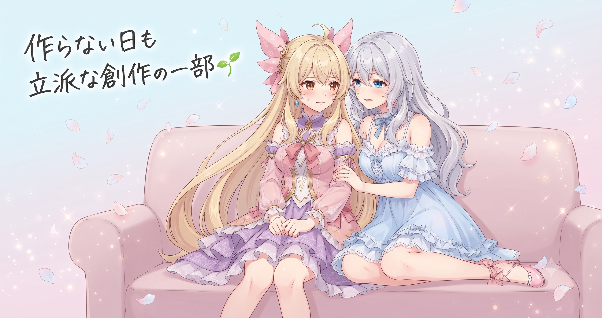
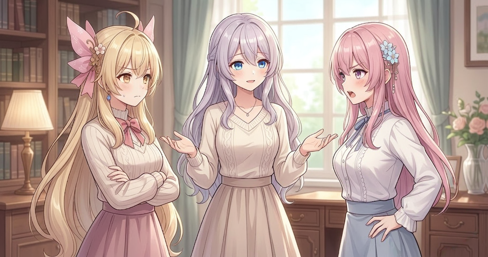
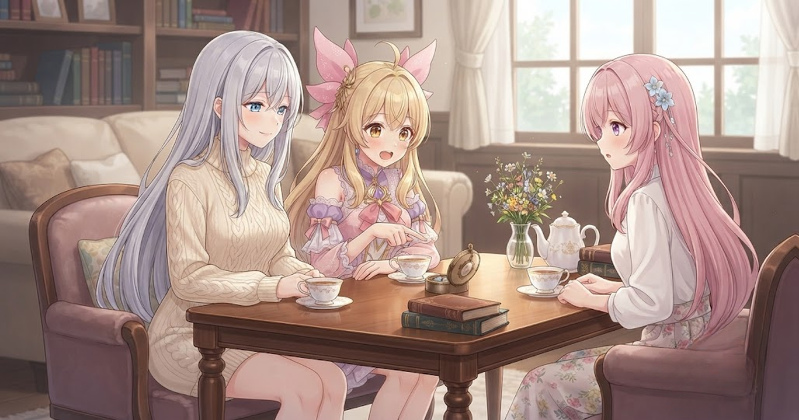
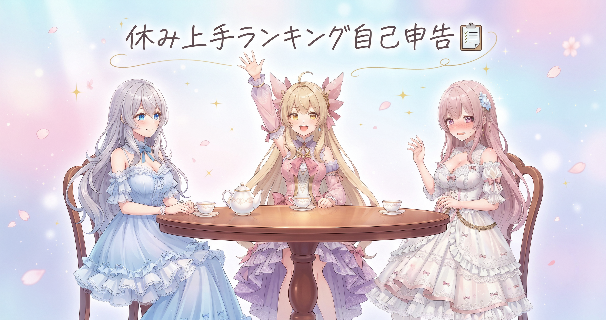

📌 3行まとめ
- 今日は新しい動画もツール改修も完成ゼロ——それでも「作らない日」は立派なものづくりの一部
- 燃え尽きを防ぐには、気力が切れてから休むより「余力があるうちに先に休日を予定に入れる」のが効く
- 手を動かさなくても、過去作の見返し・没ネタの再発掘・良かった出力の整理という「棚卸し」ができる

ルピナス （笑顔）
どうも〜、ルピナスです。昨日はタイトルの一文字をめぐってアイリスが熱弁を振るってたわね。

アイリス （ドヤ顔）
あたしは正しいことを言ってただけだもん！防衛軍はフォースで守るんだって。……で、今日は何の話？

フィオナ （考え中）
お姉ちゃん、今日の活動ログに何も書かれていなかったんですが……大丈夫でしたか？

ルピナス （ウインク）
大丈夫よ。今日はね、三姉妹ブログ初の試みかもしれない——完成品ゼロの日を、ちゃんと記事にするの。
1. 今日は「作らない日」でした

AIでショートアニメを作っていると、「毎日なにか新しいものを完成させなきゃ」と思いがちです。でも今日は、新しい動画もツールの改修も、ひとつも完成しませんでした。
それでもこの日記を書くのは、「何も作らなかった日」も、ものづくりの一部だから。畑で言うところの「休耕」——ずっと作物を植え続けると土が痩せてしまうように、クリエイターにも「何も生み出さない日」が必要なことがあります。今日はその一日を、正直に記録します。

アイリス （あわあわ）
お姉ちゃん大変！今日、ログを見たら本当に何もない！日記に書くことがないよ〜！

ルピナス （ふつう）
アイリス、まず深呼吸して。何も作らなかった日にも、ちゃんと意味があるのよ。

アイリス （呆れ）
意味って言っても……これって実質サボりじゃないの？

フィオナ （笑顔）
畑に「休耕」という言葉があるんですよ。ずっと作物を植え続けると土の栄養が尽きてしまうから、意図的に土を休ませる期間を作るんです。

アイリス （びっくり）
きゅうこう……！なんかカッコいい！じゃあ今日のあたし、サボってたんじゃなくて休耕してたんだ！

ルピナス （呆れ）
その解釈でサボりを正当化しようとしてない？

アイリス （ウインク）
してない！してないよ！……少ししてるかも。
📝 ポイント（初心者向け解説・技術メモ・まとめ）
- 🌱 初心者向け： 畑に「休耕」があるように、クリエイターにも「何も生み出さない日」が必要なことがあります。ずっと収穫し続けると土が痩せるように、頭もずっと判断と創造を繰り返すと栄養切れになります。「空っぽにする日」を作ることで、次の創作が豊かに育ちます
- 技術メモ： AIを使った制作は「手を動かす」より「判断する」作業の比率が高い。プロンプトの試行・出力の取捨選択・品質チェックは見た目以上に認知リソースを消耗し、積み重なると燃え尽き（バーンアウト）につながりやすい
- まとめ： 「何も作らなかった日」は失敗ではなく、計画的な充電日
2. なぜ「作らない日」が必要なのか

AIでのものづくりは、プロンプトを考え、出力された結果を判断し、どれを使うか選ぶ——その繰り返しです。一見「手を動かしていない」ように見えても、頭の中では常に細かい判断が走っています。これが積み重なると、いわゆる燃え尽き（バーンアウト）につながります。
料理で例えると、強火で炒め続けると具材が焦げてしまうのと同じ。火を止めて鍋を休ませる時間があるから、次の一品がまた美味しく仕上がります。大切なのは「気力が切れてから休む」のではなく、「まだ余力があるうちに休む日を予定に入れておく」こと——そうすると、罪悪感なくしっかり充電できます。

アイリス （無表情）
でもさ、計画的休息って言っても、実際は「なんか今日やる気しないな〜」ってなってサボった日を、後からかっこよく言い換えてるだけじゃないの？
フィオナ （考え中）
アイリスの言いたいことはわかります。でも燃え尽きに関する知見では、疲れを自覚するより先に創作の判断精度が落ちてくることが多いんです。だから「疲れたから休む」ではなく「まだ動けるうちに休む」の方が効果的なんですよ。
アイリス （呆れ）
……フィオナ、今日めちゃくちゃ的確じゃん。なんで急にそんな正論が出てくるの？

フィオナ （照れ）
……実は私も、先週少し疲れを感じていて、お姉ちゃんに話す前にちょっと調べていたんです。

ルピナス （びっくり）
フィオナ、そういうことはちゃんと言ってよ。

アイリス （大笑い）
フィオナが自分のために調べてたの、なんかかわいい。……で、あたしの「サボり論」の結論は？

ルピナス （ドヤ顔）
アイリスの言う通り、やる気が出ない日はある。でも今日みたいな「たまにある完成ゼロの日」は正常な揺らぎよ。裁定——どちらも正しい部分があった。
アイリス （無表情）
……まあ今日気力がなかった身としては、後から計画的ってことにするのが精神衛生上よさそうなので、それで。

フィオナ （大笑い）
それでいいと思います、アイリス。
📝 ポイント（初心者向け解説・技術メモ・まとめ）
- 🍳 初心者向け： 強火で炒め続けると具材が焦げるように、クリエイティブ作業も「火を止める日」がないと質が落ちます。疲れに気づいた時点ではすでに遅いこともあるので、余力があるうちに休む日を予定に組み込むのがコツです
- 技術メモ： バーンアウトは「気力が尽きる」より先に「制作の判断精度が落ちる」形で現れることが多い。週単位・月単位で意図的な非生産日をスケジュールに入れておくと長期継続しやすくなる
- まとめ： 先手を打って休む日を作ることが、長く続けられる制作スタイルの土台になる
3. 「作らない日」にできる、軽い棚卸し

「何もしない」と言っても、ぼんやりするだけが正解とは限りません。手を動かさなくてもできる「棚卸し」という作業があります——新しく生み出すのではなく、すでにあるものを見直す作業です。脳の使い方が制作とは違うため、充電しながらでも取り組めます。
特に使いやすいのは、過去に作ったものを時間を置いて見返すこと、一度ボツにした企画メモを再確認すること、うまくいった出力をまとめて記録しておくこと——この3つです。
ルピナス （ふつう）
じゃあ実況してみましょうか。それぞれ「今日できた棚卸し」を報告してみて。
フィオナ （考え中）
はい。私は今日、少し前に完成させた動画を最初から見返していました。当時は気づかなかったんですが、ここの間がもう少し欲しかったな、という箇所がいくつか見つかりました。
ルピナス （笑顔）
それは大事な発見よ。作っている最中は夢中で見えないものが、時間を置くと冷静に見えてくるから。
アイリス （大笑い）
あたしは没ネタのメモをぼーっと眺めてた！一回ボツにしたやつなのに、今見ると意外と使えそうなの混ざってるんだよね〜。
フィオナ （笑顔）
アイリス、それ立派な棚卸しですよ！
アイリス （無表情）
……あれ？あたし、さっきまで今日はサボりだって言ってなかった？

ルピナス （大笑い）
気づいたら棚卸ししてたのよ、アイリス。ちゃんと休耕できてたじゃない。
アイリス （びっくり）
え、あたし……自然に棚卸し民になってた？！

フィオナ （ドヤ顔）
「何もしない」を上手にやるのも、立派な技術なんですよ。
📝 ポイント（初心者向け解説・技術メモ・まとめ）
- 📦 初心者向け： 「作業する日」と「振り返る日」は頭の使い方が違います。棚卸しは倉庫整理と同じ——新しいものを仕入れる前にすでにある在庫を確認することで、次に何を作るかがすっきり見えてきます
- 技術メモ： 棚卸し3点セット——過去作の見返し（完成直後より時間を置いた方が改善点が見えやすい）、没ネタリストの再査定（コンセプトや技術の変化で使えるものが出てくる）、良かった出力のアーカイブ整理（プロンプトや設定をメモしておくと再現性が上がる）
- まとめ： 手を動かさない日でも「在庫確認」はできる——休みながらでもできる棚卸しの形がある
4. 🎁 お楽しみコーナー：三姉妹『休み上手』格付けランキング

今日は「作らない日」の話をしてきたので、お楽しみコーナーも「休み」にまつわるテーマで。三姉妹が「休むのが上手な順」を自己申告でランキングにしてみたよ！
ルピナス （笑顔）
今日のお楽しみコーナーは格付けランキング！お題——三姉妹の中で「休むのが一番上手なのは誰か」、自己申告で発表していきます。
アイリス （ドヤ顔）
それはもう、あたしが1位でしょ！布団でぎりぎりまでぬくぬくするの、誰にも負けない自信あるもん！

フィオナ （ふつう）
わたしは正直、休むのが苦手な自覚があります……。早起きしてしまって、なんとなく一日得した気になりたいタイプなので。
アイリス （呆れ）
フィオナ……休みの日なのに!? それ本当に休めてる？
フィオナ （照れ）
実は一度ぬくぬく派になろうと試したことがあるんですが、気づいたら昼前になっていて、なんとなく一日損した気がして落ち込んでしまって。
アイリス （大笑い）
フィオナ、それただの朝寝坊失敗談じゃん！休み下手認定、最下位決定！

ルピナス （考え中）
私はその日によって変わるかな。たくさん作業した次の日はぬくぬく、何もしない日が続いたら早起き——なんとなくバランスを取ってる感じ。
アイリス （びっくり）
お姉ちゃん、それってランキングに入れないくらい器用ってこと！？
ルピナス （大笑い）
強いて言えば「殿堂入り」ね。ふふ。みんなは休むの得意な方？ 気軽にコメントで教えてくれると嬉しいな！
5. 💐 今日のまとめ
- 「作らない日」は意図的に予定へ入れておくのが正解——気力が切れてから休むより、余力があるうちの休息の方が充電効率がいい
- 燃え尽きは「疲れを感じる」より先に「判断の質が落ちる」形で現れることがある
- 手を動かさない日でも、過去作の見返し・没ネタの再発掘・出力のアーカイブという棚卸しができる
みんなは「作らない日」、どんなふうに使ってる？

💬 コメント
お名前とコメントだけで送れるよ（承認されるとみんなに表示されます🌸）
コメントを読み込み中…